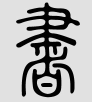
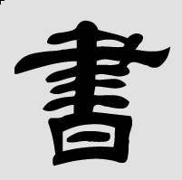
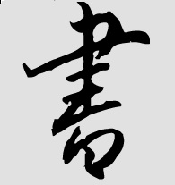
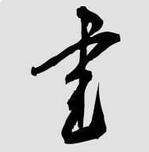
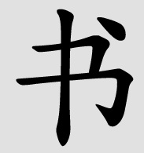

Styles
There are a number of different writing styles, some more practical some more artistic. Calligraphy is an art form in China that extends well beyond practical writing requirements.A more recent issue with wirting Chinese characters is the use of computers. The large number of Chinese characters poses problems for character sets, fonts and how the characters are input into a computer system.
Here are the major writing styles using the character for 书 (book as an illustration).
|  Seal script (based on Qin dynasty script - still used for seals etc.) |
 Clerical script(Han dynasty) |
|  Semi-cursive script (used for hand-writing) |
 Cursive script (grass script, mainly for artistic use, difficult to read) |
|
 Regular script (most recent script, used for printed material etc.) |
|
There are a number of input systems used on computers. The most common ones for non-native speakers rely on typing the pinyin equivalent of the characters. The computer then presents the user with a list of matching characters. Input systems vary in terms of how many characters they can deal with at a time (the longer the input the more easily the characters are disambiguated) and so on.
Some system allow the input of handwritten characters, which the system then tries to analyse and again presents the user with a list of potential matches.
Finally, there are some input systems which rely on strokes and components, these are mainly used by native speakers (e.g. 五笔字型, wǔbǐzìxíng).